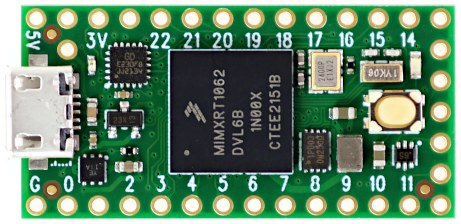

Lecture 1: Course Introduction and Programming Environment Setup
This lecture is devoted to the software suite install so that everybody can follow the other lectures from Insa or from his home if it needs to be done in distant work.
Course outline
All Lecture (2h on a computer) are labs on the LyraT board
Part 1 : Board introduction and Audio Signal Processing Basics
- Lecture 1 (2h): Course Introduction, programming env setup
- Lecture 2: Basic signal processing,
- Lecture 3: Audio systems architecture, audio callback
- Lecture 4: Hardware Audio codec configuration
- Lecture 5 & 6: Audio signal processing basics synthesis
- Lecture 7: Faust Language tutorial https://faust.grame.fr/
Part 2: Embedded Audio System Architecture
- Lecture 8: RTone comference on embedded systems in industry https://rtone.fr/
- Lecture 9: TBD
- Lecture 10: TDB
Part 3: LyraT programming
- Lecture 11-14: mini project
- Lecture 15-16: demonstrations
Introduction to AUD2020 and Teensy


The development in AUD are performed on teensy which is developped by PJRC. It is a microcontroller that offers many I/O pins and a USB interface. It is programmed using specialization of the arduino programming environnement (teensyduino).
Teensy is a brand of microcontroller development boards designed by the co-owner of PJRC, Paul Stoffregen. The first Teensy 2.0, Teensy++ 2.0 (and discontinued predecessors) use an 8-bit AVR microcontrollers. Teensy 3.0 (and up) have instead Freescale microcontrollers, running ARM Cortex-M CPUs.
In AUD, we use Teensy 4.0 which contain an ARM Cortex-M7 at 600 MHz with a Floating point unit, hence it can handle non trivial audio treatment.
Teensy 4.0 and Audio shield (from PJRC website).
Teensy 4.0 uses many powerful CPU features useful for true real-time microcontroller platform. The CPU is an ARM Cortex-M7 dual-issue superscaler clocked at at 600 MHz. CPU performance is many times faster than typical 32 bit microcontrollers. The Floating Point Unit performs 32 bit float and 64 bit double precision math in hardware. DSP extension instructions accelerate signal processing, filters and Fourier transform. The Audio library automatically makes uses of these DSP instructions.

Teensy performance from Core Benchmarks
This pinout reference card comes with Teensy 4.0 (do not loose it! ).


Teensy 4.0 has a total of 40 input/output signal pins. 24 are easily accessible when used with a solderless breadboard. The available pins include general purpose IO (GPIO), as well as integrated serial protocols (I2C, I2S, CAN, SPI and UART protocols) that are used to connect to other devices.
In AUD, we use the audio adaptor board provided by PJRC that integrates a low power stereo codex (NXP Semiconductors SGTL5000 codec) and a SD card reader.


TO BE CONTINUED
We use ESP32-LyraT v4.3 evaluation board, all available documentation is present on espressif web site. You will need to access to the hardware reference and the schematics of the board.
The ESP32-LyraT v3.4 is a hardware platform designed for the dual-core ESP32 audio applications, e.g., Wi-Fi or Bluetooth audio speakers, speech-based remote controllers, connected smart-home appliances with one or more audio functionality, etc.
The components are quite clearly shown on Figure above, here are some precision:
- Output socket to connect headphones use a 3.5 mm stereo jack. The socket may be used with mobile phone headsets and is compatible with OMPT standard headsets only. It does not work with CTIA headsets.
- When programming (i.e. flashing) the board , the following actions must be performed: hold down the Boot button and simultaneously momentarily press the Reset button. This initiates the firmware upload mode. Then user can upload firmware through the serial port (using the flash program on the host computer).
- once the board is programmed (i.e. flashed), pressing the Reset button is necessary for the new program to start.
- The audio chip used is the [``ES8388`` from Everest](lecture1/img/ES8388-EverestSemiconductor.pdf). It is quite important because performance and properties of audio codec vary a lot from one to another. It is connected to I2C and I2S busses of the ESP32.
- The USB-UART port is used to have a serial communication between the ESP32 and the host computer as well as for flashing/programming the ESP32 with JTAG protocol using ``openocd`` tool.
- The Green 'Standby/Charging' LED indicates that the board is powered from USB. The red 'Power On' LED indicates that the board is on (there is a switch to cut it off). The 'Green' LED can be used by the user program.
ESP32 developpement framework: ESP32 IDF
IDF stands for IOT Development Framework, it is relatively straightforward to install it on your computer.
It has been installed on TC dept machines, in /opt/esp-adf/esp-idf. In order to use it, you have to run the file export.sh located in the directory where you have installed IDF.
Installing ESP32 IDF on your computer
Note that IDF installation uses more than 3GB of disk space. Note also you will need to have Python3 (and not Python2.7), you can handle different version of Python on Linux using update-alternatives
Follow the instruction on the espressive IDF getting started page and install IDF on your computer (The installation is quite long 10-20 minutes depending on the quality of your connection).
Although it is not mandatory, it is recommended to add the IDF_PATH (which is the location where you installed ESP32-IDF) in your environment.
When you have install ESP32-IDF in directory ''ESP32-IDF'', you have to source the export.sh file before building a project:
source ESP32-IDF/export.sh
it is not recommended to perform the source of ''export.sh'' in the profile script because it might invalidate other tool using python. Instead you can define a command for performing the source:
alias get_idf='. $HOME/esp/esp-idf/export.sh'
Different compilation tools used
ESP32-IDF projects supports several build/compilation tools: make, cmake and idf.py (we recommend the use of idf.py tool)
- ``make``, using a generic and quite complex ``ID_PATH/make/project.mk`` Makefile for all existing project. This was the original only tool used IDF, however it is being progressively replaced by the ``cmake`` compilation tools.
- ``cmake`` which is the recommended toolchain as ``make`` might not be supported anymore in further version. Here is an example of project compilation with ``cmake``:
mkdir build; cd build; cmake ../ make make flash make monitor - ``idf.py`` is a top-level python config/build command line tool for ESP-IDF provided by espressive build. Here is an example of project compilation with ``idf.py``:
idf.py all idf.py flash idf.py monitor
Getting Started on TC Machines
Launching the Compilation Flow on TC Machines
The idf tool chain is installed on TC machine in /opt/esp-idf/. In order to use this tool chain, do the following commands:
export IDF_TOOLS_PATH=/opt/idf_tools
source /opt/esp-idf/export.sh
You should get the following message (if you do not, it do not go further):
[...]
Go to the project directory and run:
idf.py build
then copy de /opt/esp-idf/examples/get-started/ to your home directory:
cp /opt/esp-idf/examples/get-started/ ~/my-esp/
Go in the ``get-started/hello_world and build the project
cd ~/my-esp/hello_world/
idf.py build
Once the binary program built, connect the lyraT board with the usb cables, make sure that the central switch is in position 'on'.
Load the program: execute the following command and do the 'flash' manipulation: push continuously on the boot button, press (shortly, but not too shortly) on the reset button, release the boot button:
idf.py flash
you should see the load executing..
Open the serial port on /dev/ttyUSB0 using IDF monitor facility:
idf.py monitor
Do not forget to reset the board once again (push on the reset button) after each flash operation otherwise your program is not started. Then you should see the board booting every 10 second. Kill the serial monitor by using the command:
Ctrl-alt gr-]
Flashing the LED.
Go in the get-started/blink directory
this program blink the LED, but the port in not configured correctly as it is an information that depends on the experimental board in which the ESP32 is used. launche the menuconfig interface, select example configuration and choose 22 for Blink_GPIO_number
Known Problems
Requirements are not satisfied: gdbgui>=0.13.2.0
On ubuntu, this message sometimes occurs when sourcing export.sh. We did not completely understood the problem but two solutions seemed to work:
- Remove explicitely the faulty dependance in ``${IDF}/requirement.txt``. The faulty dependance is not ``gdbgui`` but ``pugdbmi``: comment the line mentionning ``pugdbmi``
- Use the reddit solution: [https://www.reddit.com/r/esp32/comments/ifgfy9/why_am_i_getting_this_gdbgui01320_error/](https://www.reddit.com/r/esp32/comments/ifgfy9/why_am_i_getting_this_gdbgui01320_error/)
USB driver on MAC platforms
It occurs on some MAC computers that the USB driver are not installed, you have to install it expicitely, it is explained here for instance: https://www.amstramgrame.fr/gramophone/loader/
Pyhton (build) problem on MAC platforms
Not solved yet